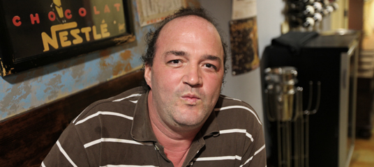
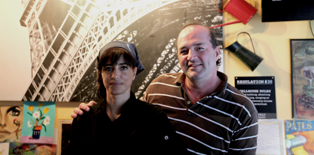
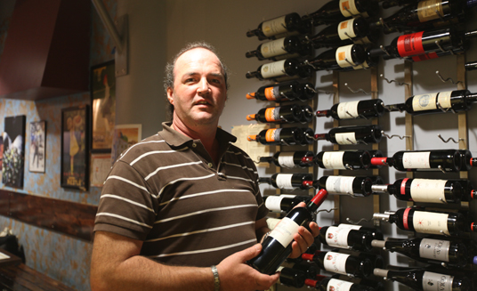

Christian Jouault est originaire de Normandie, en France, mais il a quitté son pays natal en 1990 car il s'y sentait "enfermé", "pas libre". Après quelques années passées à Los Angeles, il s'est installé à Miami où il a ouvert un restaurant, "le café Bastille".

Il possède désormais la double nationalité, française et américaine, et peut donc participer aux élections des deux côtés de l'Atlantique. "J'ai voté pour Marine Le Pen et Barack Obama", explique-t-il fièrement, assurant ne pas trouver étrange de soutenir à la fois une candidate d'extrême droite et un autre classé à gauche. "Le Parti démocrate serait de droite s'il existait en France, se justifie-t-il. D'ailleurs, la plupart des Français de Miami sont pro-Obama tout en ayant voté pour Sarkozy ou Le Pen."

Il assure qu'il y a "beaucoup trop de social" dans son pays d'origine, même s'il souhaiterait que les États-Unis adoptent un système de santé à la française. "L'Obamacare est une bonne chose pour les États-Unis. Je trouve scandaleux qu'un de mes employés, qui souffre de diabète, se fasse rejeter de toutes les compagnies d'assurance privées", assène-t-il.
 Quant à Mitt Romney, il assure ne pas être impressionné par le personnage : "C'est un businessman comme moi, mais ça ne veut pas dire qu'il ferait un bon chef d'État".